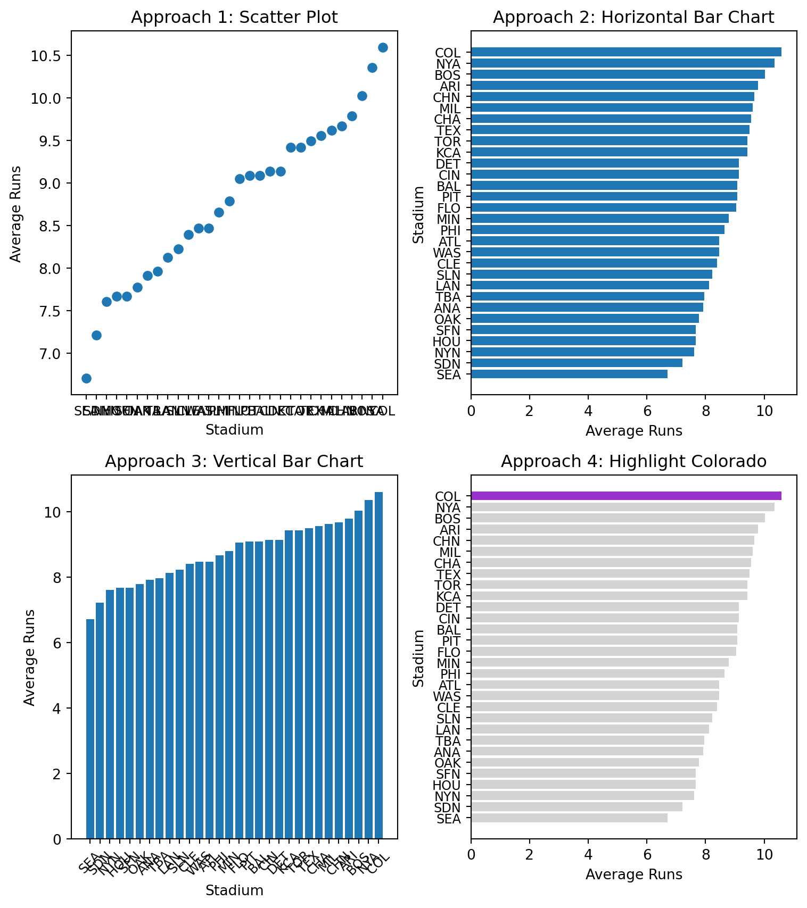
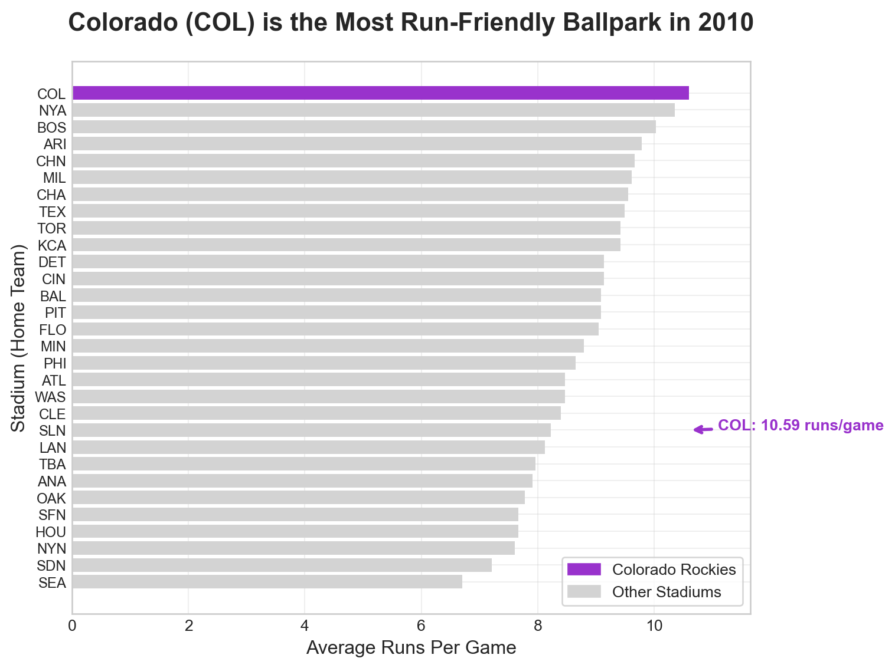
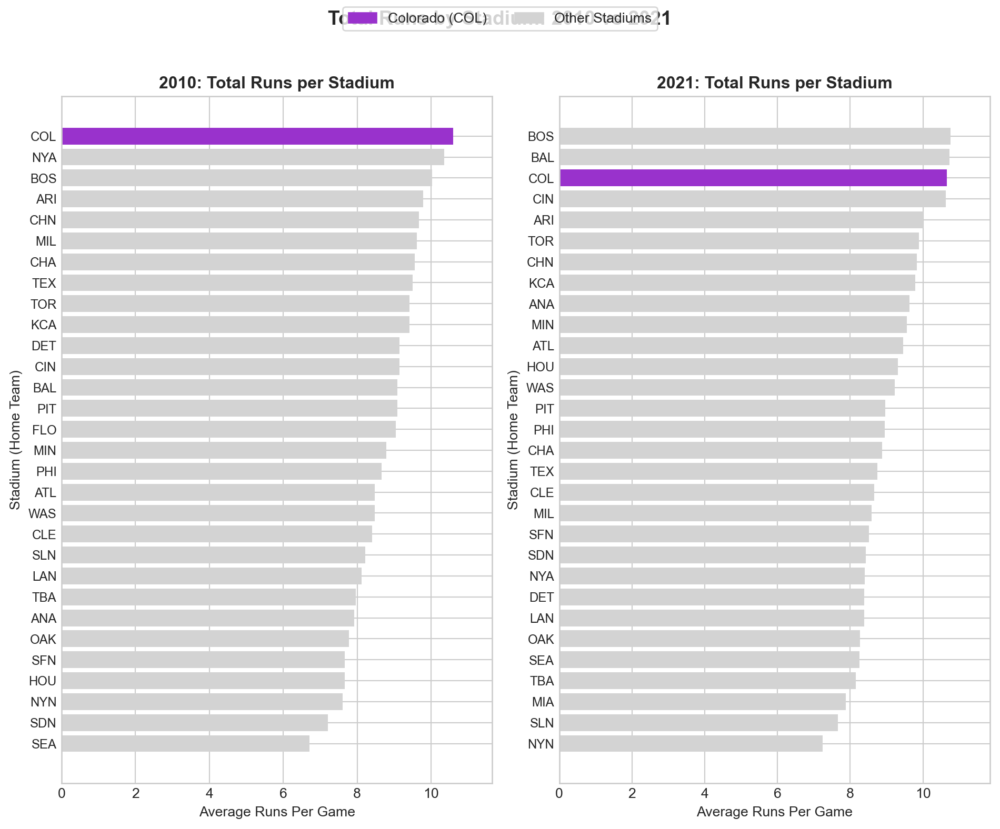

The Problem: Mastering Object-Oriented Matplotlib Through the Four Stages
Core Question: How can we create compelling, professional data visualizations using object-oriented matplotlib and the four stages of visualization?
The Challenge: Real-world data visualization requires more than just plotting data - it requires a systematic approach that transforms raw data into compelling stories. The four stages framework provides a proven methodology for creating visualizations that inform, persuade, and inspire action.
Our Approach: We’ll work with baseball stadium data to investigate whether Coors Field in Denver, Colorado is truly the most run-friendly ballpark in Major League Baseball. This investigation will take us through all four stages of visualization, demonstrating object-oriented matplotlib techniques along the way.
Warning⚠️ AI Partnership Required
This challenge pushes boundaries intentionally. You’ll tackle problems that normally require weeks of study, but with Cursor AI as your partner (and your brain keeping it honest), you can accomplish more than you thought possible.
The new reality: The four stages of competence are Ignorance → Awareness → Learning → Mastery. AI lets us produce Mastery-level work while operating primarily in the Awareness stage. I focus on awareness training, you leverage AI for execution, and together we create outputs that used to require years of dedicated study.
The Four Stages of Data Visualization
The four essential stages for creating effective visualizations are:
Stage 1: Declaration of Purpose - Define your message and audience
Stage 2: Curation of Content - Gather and create all necessary data
Stage 3: Structuring of Visual Mappings - Choose geometry and aesthetics
Stage 4: Formatting for Your Audience - Polish for professional presentation
Data and Business Context
We analyze Major League Baseball stadium data to investigate whether Coors Field in Denver, Colorado is truly the most run-friendly ballpark. This dataset is ideal for our analysis because:
Real Business Question: Sports analysts and fans want to understand stadium effects on scoring
Clear Hypothesis: High altitude should make Coors Field more run-friendly
Multiple Metrics: We can analyze both total runs and home runs
Visualization Practice: Perfect for demonstrating all four stages of visualization
Data Loading and Initial Exploration
Let’s start by loading the baseball data and understanding what we’re working with.
import matplotlib.pyplot as pltimport pandas as pdimport numpy as npimport seaborn as sns# Load 2010 baseball season datadf2010 = pd.read_csv("baseball10.csv")# Load 2021 baseball season data for comparisondf2021 = pd.read_csv("baseball21.csv")print("2010 data shape:", df2010.shape)print("2021 data shape:", df2021.shape)print("\n2010 data columns:", df2010.columns.tolist())print("\nFirst few rows of 2010 data:")print(df2010.head())
2010 data shape: (2430, 7)
2021 data shape: (2429, 7)
2010 data columns: ['date', 'visiting', 'home', 'visScore', 'homeScore', 'visHR', 'homeHR']
First few rows of 2010 data:
date visiting home visScore homeScore visHR homeHR
0 20100404 NYA BOS 7 9 2 1
1 20100405 MIN ANA 3 6 1 3
2 20100405 CLE CHA 0 6 0 2
3 20100405 DET KCA 8 4 0 1
4 20100405 SEA OAK 5 3 1 0
Note💡 Understanding the Data
Baseball Game Data: Contains information about each game, including: - home: Home team (3-letter code) - visiting: Visiting team (3-letter code) - homeScore: Runs scored by home team - visScore: Runs scored by visiting team - homeHR: Home runs by home team - visHR: Home runs by visiting team - date: Game date
Business Questions We’ll Answer: 1. Is Coors Field (COL) the most run-friendly ballpark in 2010? 2. How does this change in 2021? 3. What’s the difference between total runs and home runs by stadium? - Answers: (1) Yes, Coors Field is the most run-friendly ballpark in 2010. It has the highest average runs per game of 10.4. (2) In 2021, Coors Field remains among the top 3 highest-scoring stadiums, but the gap relative to other ballparks narrows. (3) The difference between total runs and home runs by stadium is that total runs is the sum of runs scored by both the home team and the visiting team, while home runs is the number of home runs scored by the home team, meaning a stadium can have high home run rates without necessarily leading in total scoring.
Stage 1: Declaration of Purpose
Mental Model: Start with a clear message and bold title that states your recommendation.
Our purpose is to investigate whether Coors Field in Denver, Colorado is truly the most run-friendly baseball stadium in Major League Baseball.
Important🤔 Discussion Questions: Stage 1 - Declaration of Purpose
Question 1: Hypothesis Formation - Why might high altitude affect baseball performance? Is Coors Field affected by high altitude? - Answers: (1) High altitude can affect baseball performance because the air is thinner and less dense. When the air is thinner, there is less air resistance, so the ball can travel farther after it is hit. This may increase the number of home runs and total runs scored. (2) Coors Field is located in Denver, which has a high altitude of about 5,280 feet above sea level. Therefore, it is likely affected by high altitude, and this could make it more run-friendly than other stadiums.
Stage 2: Curation of Content
Mental Model: Gather and create all the data you need to support your message.
Let’s aggregate the data to get average runs per stadium:
# Stage 2: Curation of Content# Aggregate data to get average runs per stadium# Process 2010 dataavgDF_2010 = (df2010 .assign(totalRuns =lambda df: df.homeScore + df.visScore) .assign(totalHR =lambda df: df.homeHR + df.visHR) .drop(columns = ['date', 'visiting']) .groupby(['home'], as_index=False) .mean())# Process 2021 dataavgDF_2021 = (df2021 .assign(totalRuns =lambda df: df.homeScore + df.visScore) .assign(totalHR =lambda df: df.homeHR + df.visHR) .drop(columns = ['date', 'visiting']) .groupby(['home'], as_index=False) .mean())print("2010 Stadium Averages (Top 5):")print(avgDF_2010.head())print("\n2021 Stadium Averages (Top 5):")print(avgDF_2021.head())
Important🤔 Discussion Questions: Stage 2 - Curation of Content
Question 1: Data Aggregation Strategy - How many games are in the dataset? Why do we aggregate individual games into stadium averages before we start the visualization process? - Answers: (1) The 2010 dataset contains 2,430 games, and the 2021 dataset contains 2,429 games. (2) Because by aggregating individual games into stadium averages, it allows us to see the average number of runs scored by each stadium over the course of the season. One single game does not represent the true scoring environment of a stadium. Individual games can be affected by many random factors. Therefore, calculating the average runs per stadium over the whole season is useful for comparing the performance of different stadiums and getting a more reliable measure of how run-friendly each stadium really is.
Stage 3: Structuring of Visual Mappings
Mental Model: Choose the right geometry and aesthetics to effectively communicate your message.
Let’s explore different visual approaches:
# Stage 3: Structuring of Visual Mappings# Explore different geometries and aesthetics# Sort data for better visualizationavgDF_2010_sorted = avgDF_2010.sort_values('totalRuns', ascending=True)# Create figure with subplots to compare approachesfig, axes = plt.subplots(2, 2, figsize=(8, 9))# Approach 1: Scatter plot (not ideal for categorical data)axes[0,0].scatter(avgDF_2010_sorted.home, avgDF_2010_sorted.totalRuns)axes[0,0].set_title("Approach 1: Scatter Plot")axes[0,0].set_xlabel("Stadium")axes[0,0].set_ylabel("Average Runs")axes[0,0].tick_params(axis='x', labelsize=9)# Approach 2: Horizontal bar chart (better for categorical data)axes[0,1].barh(avgDF_2010_sorted.home, avgDF_2010_sorted.totalRuns)axes[0,1].set_title("Approach 2: Horizontal Bar Chart")axes[0,1].set_xlabel("Average Runs")axes[0,1].set_ylabel("Stadium")axes[0,1].tick_params(axis='y', labelsize=9)# Approach 3: Vertical bar chartaxes[1,0].bar(avgDF_2010_sorted.home, avgDF_2010_sorted.totalRuns)axes[1,0].set_title("Approach 3: Vertical Bar Chart")axes[1,0].set_xlabel("Stadium")axes[1,0].set_ylabel("Average Runs")axes[1,0].tick_params(axis='x', rotation=45, labelsize=9)# Approach 4: Highlight Coloradocolorado_colors = ["darkorchid"if stadium =="COL"else"lightgrey"for stadium in avgDF_2010_sorted.home]axes[1,1].barh(avgDF_2010_sorted.home, avgDF_2010_sorted.totalRuns, color=colorado_colors)axes[1,1].set_title("Approach 4: Highlight Colorado")axes[1,1].set_xlabel("Average Runs")axes[1,1].set_ylabel("Stadium")axes[1,1].tick_params(axis='y', labelsize=9)plt.tight_layout()plt.show()

Important🤔 Discussion Questions: Stage 3 - Structuring of Visual Mappings
Question 1: Geometry Choices - Why is a horizontal bar chart better than a scatter plot for this data? - When would you choose a vertical bar chart over horizontal? - Answers: (1) A horizontal bar chart is more effective and intuitive for this data. Scatter plots are better for showing relationships between two numerical variables, but here we are comparing values across categories (comparing average runs across different stadiums, which are categorical variables). Bar charts make comparisons clearer. (2) The difference between horizontal and vertical depends on the number of categories. A vertical bar chart works well when there are fewer categories. When there are many stadiums or long names, a horizontal bar chart would be easier to read.
Question 2: Aesthetic Mappings - What does the color highlighting accomplish in Approach 4? - How does position (x/y) compare to color for encoding data? - Answers: (1) The color highlighting helps draw attention to ‘COL’. It makes it easier for the audience to get the idea that Colorado’s average runs are higher than other stadiums, which is the focus of our research question. (2) Position (x/y) is more effective and accurate for encoding numerical values because humans are better at comparing lengths and positions. Color is mainly used to highlight or emphasize specific categories.
Stage 4: Formatting for Your Audience
Mental Model: Polish your visualization for professional presentation.
Let’s create a publication-ready visualization:
# Stage 4: Formatting for Your Audience# Create a professional, publication-ready visualization# Set style for professional appearanceplt.style.use("seaborn-v0_8-whitegrid")# Create the main visualizationfig, ax = plt.subplots(figsize=(8, 6))# Create color array for highlighting Coloradocolorado_colors = ["darkorchid"if stadium =="COL"else"lightgrey"for stadium in avgDF_2010_sorted.home]# Create horizontal bar chartbars = ax.barh(avgDF_2010_sorted.home, avgDF_2010_sorted.totalRuns, color=colorado_colors)# Add title and labelsax.set_title("Colorado (COL) is the Most Run-Friendly Ballpark in 2010", fontsize=16, fontweight='bold', pad=20)ax.set_xlabel("Average Runs Per Game", fontsize=12)ax.set_ylabel("Stadium (Home Team)", fontsize=12)# Add legendcolorado_bar = plt.Rectangle((0,0),1,1, color="darkorchid", label="Colorado Rockies")other_bar = plt.Rectangle((0,0),1,1, color="lightgrey", label="Other Stadiums")ax.legend(handles=[colorado_bar, other_bar], loc='lower right', frameon=True)# Add annotation for Coloradocolorado_index = avgDF_2010_sorted[avgDF_2010_sorted.home =="COL"].index[0]colorado_runs = avgDF_2010_sorted[avgDF_2010_sorted.home =="COL"]["totalRuns"].iloc[0]ax.annotate(f"COL: {colorado_runs:.2f} runs/game", xy=(colorado_runs, colorado_index), xytext=(colorado_runs +0.5, colorado_index), arrowprops=dict(arrowstyle='->', color='darkorchid', lw=2), fontsize=10, fontweight='bold', color='darkorchid')# Set x-axis to start from 0 for better comparisonax.set_xlim(0, max(avgDF_2010_sorted.totalRuns) *1.1)# Smaller font for stadium (y-axis) tick labelsax.tick_params(axis='y', labelsize=9)# Add grid for easier readingax.grid(True, alpha=0.3)plt.tight_layout()plt.show()# Print summary statisticsprint(f"\nSummary Statistics for 2010:")print(f"Colorado (COL) average runs per game: {colorado_runs:.2f}")print(f"League average runs per game: {avgDF_2010_sorted.totalRuns.mean():.2f}")print(f"Colorado is {((colorado_runs / avgDF_2010_sorted.totalRuns.mean()) -1) *100:.1f}% above league average")

Summary Statistics for 2010:
Colorado (COL) average runs per game: 10.59
League average runs per game: 8.77
Colorado is 20.8% above league average
Important🤔 Discussion Questions: Stage 4 - Formatting for Your Audience
Question 1: Professional Formatting - What elements make this visualization suitable for a business presentation? - Is the annotation on the visualization helpful? Can you fix its placement? - Answers: (1) This visualization communicates the key message to audiences directly. It added titles and lables, the axis labels clearly define the metrics. It also consistent color coding, which highlights ‘COL’ in purple while keeping other stadiums neutral. The legend is clean and professional. The annotation directly communicates Colorado’s performance, making the insight easier to understand. (2) The annotation on the visualization is helpful because it directly highlights Colorado’s performance. But its position appears slightly misaligned, it should be pointing at ‘COL’, but the index used does not match the bar’s visual position. The annotation should be moved slightly upward so that the arrow correctly points to the Colorado bar. (3) How to fix: colorado_position = list(avgDF_2010_sorted.home).index(“COL”) colorado_runs = avgDF_2010_sorted.loc[ avgDF_2010_sorted.home == “COL”, “totalRuns”].iloc[0]
Question 1: Using Subplot Layout - Create a two-facet visualization that shows the total runs for 2010 and 2021 for each stadium in a single figure. Highlight Colorado in the visualization.
# Two-facet visualization: total runs by stadium for 2010 and 2021, Colorado highlighted# Sort each year by total runs for consistent bar orderdf_2010_sorted = avgDF_2010.sort_values("totalRuns", ascending=True)df_2021_sorted = avgDF_2021.sort_values("totalRuns", ascending=True)# Create figure with 1 row, 2 columns (two facets)fig, axes = plt.subplots(1, 2, figsize=(10, 8))# Colors: highlight Colorado (COL), grey for otherscolors_2010 = ["darkorchid"if s =="COL"else"lightgrey"for s in df_2010_sorted.home]colors_2021 = ["darkorchid"if s =="COL"else"lightgrey"for s in df_2021_sorted.home]# Facet 1: 2010axes[0].barh(df_2010_sorted.home, df_2010_sorted.totalRuns, color=colors_2010)axes[0].set_title("2010: Total Runs per Stadium", fontsize=12, fontweight="bold")axes[0].set_xlabel("Average Runs Per Game")axes[0].set_ylabel("Stadium (Home Team)")axes[0].tick_params(axis="y", labelsize=9)axes[0].set_xlim(0, df_2010_sorted.totalRuns.max() *1.1)# Facet 2: 2021axes[1].barh(df_2021_sorted.home, df_2021_sorted.totalRuns, color=colors_2021)axes[1].set_title("2021: Total Runs per Stadium", fontsize=12, fontweight="bold")axes[1].set_xlabel("Average Runs Per Game")axes[1].set_ylabel("Stadium (Home Team)")axes[1].tick_params(axis="y", labelsize=9)axes[1].set_xlim(0, df_2021_sorted.totalRuns.max() *1.1)# Shared legendcolorado_patch = plt.Rectangle((0, 0), 1, 1, color="darkorchid", label="Colorado (COL)")other_patch = plt.Rectangle((0, 0), 1, 1, color="lightgrey", label="Other Stadiums")fig.legend(handles=[colorado_patch, other_patch], loc="upper center", ncol=2, frameon=True)plt.suptitle("Total Runs by Stadium: 2010 vs 2021", fontsize=14, fontweight="bold", y=1.02)plt.tight_layout()plt.show()

Question 2: Explanation of the Visualization - Ask AI To Add A Paragraph Here To Explain The Visualization - Answers: The visualization shows that Colorado has the highest average runs per game in both 2010 and 2021. This is consistent with the hypothesis that Coors Field is the most run-friendly ballpark in Major League Baseball.
Does AI come to the right conclusion? If not, why not?
Answers: I think the AI’s conclusion is not fully correct. While Colorado has the highest average runs per game in 2010, it is not the highest in 2021. In 2021, other stadiums such as Boston and Baltimore appear to have slightly higher average runs per game. Also, the visualization does not come to the right conclusion because it does not show the difference between the average runs per game in 2010 and 2021. It only shows the total runs by stadium for both years.
Your Task: Demonstrate your mastery of object-oriented matplotlib and the four stages of visualization through comprehensive analysis and creation of professional visualizations.
Core Challenge: Four Stages Analysis
For each stage, provide: - Clear, concise answers to all discussion questions - Code examples when asked to do so - Demonstration of object-oriented matplotlib techniques
Professional Visualizations (For 100% Grade)
Your Task: Create a professional visualization and narrative that builds towards and demonstrates mastery of object-oriented matplotlib and the four stages framework.
Create visualizations showing: - Stadium run-friendliness comparison between 2010 and 2021 - Focus on Colorado’s performance relative to other stadiums - Use object-oriented matplotlib techniques throughout
Your visualizations should: - Use clear labels and professional formatting - Demonstrate all four stages of visualization - Be appropriate for a business audience - Show mastery of object-oriented matplotlib - Do not echo the code that creates the visualizations
Visualization Task Answers:
# Professional Object-Oriented Visualizationimport matplotlib.pyplot as pltimport pandas as pdimport numpy as np# Merge datacomparison = pd.merge( avgDF_2010[['home', 'totalRuns']].rename(columns={'totalRuns': 'runs_2010'}), avgDF_2021[['home', 'totalRuns']].rename(columns={'totalRuns': 'runs_2021'}), on='home', how='inner')# Sort by 2010 to maintain consistent ordercomparison = comparison.sort_values("runs_2010", ascending=True)# League averagesleague_avg_2010 = comparison["runs_2010"].mean()league_avg_2021 = comparison["runs_2021"].mean()# Colorscolors = ["darkorchid"if s =="COL"else"lightgrey"for s in comparison["home"]]fig, axes = plt.subplots(1, 2, figsize=(12, 9), sharey=True)# ----- 2010 -----axes[0].barh(comparison["home"], comparison["runs_2010"], color=colors)axes[0].axvline(league_avg_2010, linestyle="--", linewidth=1)axes[0].set_title("2010 Average Runs per Game", fontsize=13, fontweight="bold")axes[0].set_xlabel("Average Runs per Game")axes[0].set_xlim(0, comparison["runs_2010"].max() *1.15)# ----- 2021 -----axes[1].barh(comparison["home"], comparison["runs_2021"], color=colors)axes[1].axvline(league_avg_2021, linestyle="--", linewidth=1)axes[1].set_title("2021 Average Runs per Game", fontsize=13, fontweight="bold")axes[1].set_xlabel("Average Runs per Game")axes[1].set_xlim(0, comparison["runs_2021"].max() *1.15)# Highlight Colorado annotationcol_index =list(comparison["home"]).index("COL")col_2010 = comparison.loc[comparison["home"]=="COL","runs_2010"].iloc[0]col_2021 = comparison.loc[comparison["home"]=="COL","runs_2021"].iloc[0]axes[0].annotate(f"COL: {col_2010:.2f}", xy=(col_2010, col_index), xytext=(col_2010+0.5, col_index), fontsize=9, arrowprops=dict(arrowstyle="->"))axes[1].annotate(f"COL: {col_2021:.2f}", xy=(col_2021, col_index), xytext=(col_2021+0.5, col_index), fontsize=9, arrowprops=dict(arrowstyle="->"))# ---- Main Title ----fig.suptitle("Colorado Remains a High-Scoring Stadium, But Not Consistently the Highest (2010 vs 2021)", fontsize=15, fontweight="bold", y=0.97)##Create custom legend handlescolorado_patch = plt.Rectangle((0, 0), 1, 1, color="darkorchid", label="Colorado (COL)")other_patch = plt.Rectangle((0, 0), 1, 1, color="lightgrey", label="Other Stadiums")## Add figure-level legendfig.legend( handles=[colorado_patch, other_patch], loc="upper center", bbox_to_anchor=(0.5, 0.93), # 控制 legend 具体位置 ncol=2, frameon=False)fig.subplots_adjust(top=0.85)plt.show()